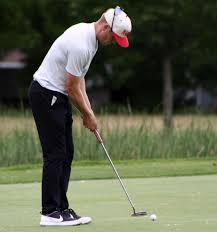

|  |
John GullbergProfessional GolfTour Player (February 2015-current) Track record of success on developmental mini tours including: Moonlight Golf Tour; Florida Professional Golf Tour; West Florida Golf Tour; Dakotas Tour. Competed in over 100 professional golf tournaments with 2 professional wins and multiple top 10 finishes. |
I am industrious and entrepreneurial but highly value collaboration and team work. I am never satisfied with the status quo and believe in data-driven results while paying attention to every detail. I am a risk-taker and remain persistent to achieve results with a hard work ethic.
I am from Racine, Wisconsin and enjoy spending time with family and friends especially while watching the Green Bay Packers, Milwaukee Bucks, and Wisconsin Badgers. A perfect day for me would be exploring a new city while observing all the different lifestyles people live. Just remember, ice cream (especially chocolate) makes everything better.| Dates | Work |
|---|---|
| 2017-2019 | Substitute Teacher at Racine Unified School District |
| 2014 | Counselor at Camp Timberline |
| 2011-2014 | Student-Athlete |